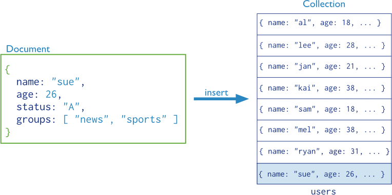

插入文档
基本概念:
在数据库中，数据插入是最基本的操作，在MongoDB使用db.collection.insert(document)语句来插入文档

代码示例:所有用户的信息存放在users集合中，每个用户的信息为一个user文档，插入数据
db.users.insert(user);
代码描述:
如果collection存在，document会添加到collection目录下
如果collection不存在，数据库会先创建collection，然后再保存document
代码概念:
如果想要查看已插入的person文档，可以使用：db.person.find()查看当前库中person集合里的数据
如果想要查看当前数据库中的集合列表，可以使用：show collections
输入代码示例:(json格式)
db.person.insert({name:'阿牛', age:28});